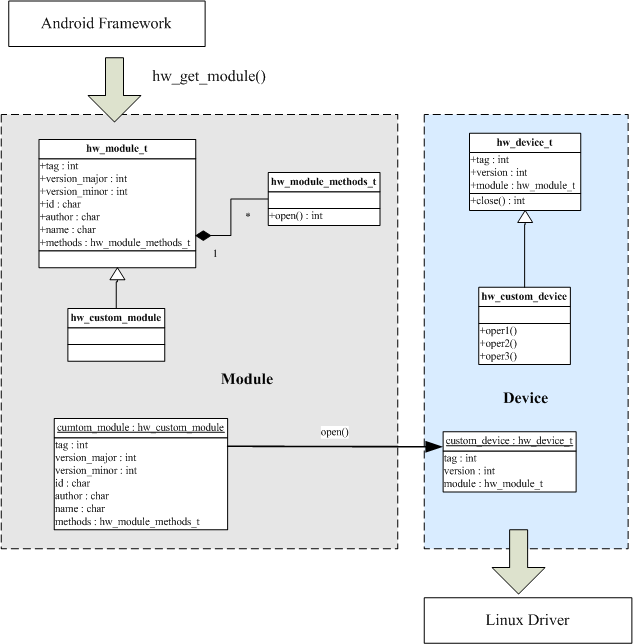

HAL的C实现
标准模块定义(hardware.h)
-
该头文件定义了实现
HAL所需要的头文件，规范的实现方法需要继承以下定义这些结构
-
struct hw_module_t;
-
struct hw_module_methods_t;
-
struct hw_device_t;

-
概括的说，就是定义一个hw_module_t模块对象，用该
模块对象的open方法初始化hw_device_t对象，最终的调用device设备对象的自定义方法对模块进行操作。
struct hw_module_t
/**
* hw_module_t需要在实现代码中实例化，并且命名为HAL_MODULE_INFO_SYM，
* 调用者通过通过hw_get_module方法获取该实例
*/
typedef struct hw_module_t {
/** tag must be initialized to HARDWARE_MODULE_TAG */
uint32_t tag;
/** major version number for the module */
uint16_t version_major;
/** minor version number of the module */
uint16_t version_minor;
/** Identifier of module */
const char *id;
/** Name of this module */
const char *name;
/** Author/owner/implementor of the module */
const char *author;
/** Modules methods */
struct hw_module_methods_t* methods;
/** module's dso */
void* dso;
/** padding to 128 bytes, reserved for future use */
uint32_t reserved[32-7];
} hw_module_t;
struct hw_module_methods_t
/*
* hw_module_t包含的打开方法，通过该方法打开devices，并获取devices对象
*/
typedef struct hw_module_methods_t {
/** Open a specific device */
int (*open)(const struct hw_module_t* module, const char* id,
struct hw_device_t** device);
} hw_module_methods_t;
struct hw_device_t
/**
* device结构封装了设备的操作方法，子类继承该结构并包含模块对象
*/
typedef struct hw_device_t {
/** tag must be initialized to HARDWARE_DEVICE_TAG */
uint32_t tag;
/** version number for hw_device_t */
uint32_t version;
/** reference to the module this device belongs to */
struct hw_module_t* module;
/** padding reserved for future use */
uint32_t reserved[12];
/** Close this device */
int (*close)(struct hw_device_t* device);
} hw_device_t;
定义自定义HAL模块
led_module_t
// c语法继承自hw_module_t结构，定义LED stub模块
struct led_module_t {
struct hw_module_t common;
// 自定义的API
int (*init_led)(struct led_control_device_t *dev);
};
led_control_device_t
// c语法继承自hw_device_t结构，定义LED device模块
struct led_control_device_t {
struct hw_device_t common;
int fd;
// 设备的API
int (*set_on)(struct led_control_device_t *dev, int32_t led);
int (*set_off)(struct led_control_device_t *dev, int32_t led);
};
led_control_open
// 内嵌的初始化方法，用来获取device对象
static inline int led_control_open(const struct hw_module_t* module,
struct led_control_device_t** device) {
return module->methods->open(module,
LED_HARDWARE_MODULE_ID, (struct hw_device_t**)device);
}
LED_HARDWARE_MODULE_ID
#define LED_HARDWARE_MODULE_ID "led"
实现自定义HAL模块
led_device_open
// 打开设备的方法，通过传入hw_device_t**，返回初始化的led_control_device_t对象
// 这里会将module传入led_control_device_t对象从而方便使用
// 另外还注册了led_device_close的方法用来关闭device
int led_device_open(const struct hw_module_t* module, const char* name,
struct hw_device_t** device)
{
struct led_control_device_t *dev;
if (!strcmp(name, "led_control_open")) {
dev = (struct led_control_device_t *)malloc(sizeof(*dev));
memset(dev, 0, sizeof(*dev));
dev->common.tag = HARDWARE_DEVICE_TAG;
dev->common.version = 0;
dev->common.module = module;
dev->common.close = led_device_close;
dev->set_on = led_on;
dev->set_off = led_off;
*device = &dev->common;
dev->fd = open("/dev/cdata-test", O_RDWR);
}
success:
return 0;
}
led_module_methods
// 初始化open方法
struct hw_module_methods_t led_module_methods = {
open: led_device_open
};
struct led_module_t HAL_MODULE_INFO_SYM
// 初始化led_module_t实例，使用HAL_MODULE_INFO_SYM作为变量名，以供HAL层进行查找
// 这里会设置led_module_methods方法，以便初始化led_device_t
const struct led_module_t HAL_MODULE_INFO_SYM = {
common: {
tag: HARDWARE_MODULE_TAG,
version_major: 1,
version_minor: 0,
id: LED_HARDWARE_MODULE_ID,
name: "Sample LED Stub",
author: "The Mokoid Open Source Project",
methods: &led_module_methods,
}
// 可以实现其他API
};
LED示例
get_device_and_on
led_device* get_device_and_on() {
int err;
hw_module_t* module;
led_device_t *led_device = NULL;
// 初始化模块
err = hw_get_module(LED_HARDWARE_MODULE_ID, (hw_module_t const**)&module);
if (err == 0) {
hw_device_t* dev;
// 通过模块的open方法初始化device
err = module->methods->open(module, "led_control_open", &dev);
if (err == 0) {
led_device = (led_device_t*)dev;
}
}
return led_device;
}
GPS示例
-
参考GPS的HAL实现，可以给device添加一个描述操作接口的struct结构GpsInterface，和一个获取该接口的方法get_gps_interface，所有的操作可以封装在这个接口中，并在这个获取方法中初始化，最终用户可以通过一个方法获取到相关操作的接口。
GpsInterface
// 封装了方法的接口
typedef struct {
size_t size;
int (*init)( GpsCallbacks* callbacks );
int (*start)( void );
int (*stop)( void );
void (*cleanup)( void );
int (*inject_time)(GpsUtcTime time, int64_t timeReference,
int uncertainty);
int (*inject_location)(double latitude, double longitude, float accuracy);
void (*delete_aiding_data)(GpsAidingData flags);
int (*set_position_mode)(GpsPositionMode mode, GpsPositionRecurrence recurrence,
uint32_t min_interval, uint32_t preferred_accuracy, uint32_t preferred_time);
const void* (*get_extension)(const char* name);
} GpsInterface;
get_gps_interface
// 通过模块初始化接口
static const GpsInterface* get_gps_interface() {
int err;
hw_module_t* module;
const GpsInterface* interface = NULL;
err = hw_get_module(GPS_HARDWARE_MODULE_ID, (hw_module_t const**)&module);
if (err == 0) {
hw_device_t* device;
err = module->methods->open(module, GPS_HARDWARE_MODULE_ID, &device);
if (err == 0) {
gps_device_t* gps_device = (gps_device_t *)device;
interface = gps_device->get_gps_interface(gps_device);
}
}
return interface;
}
{kind=link}